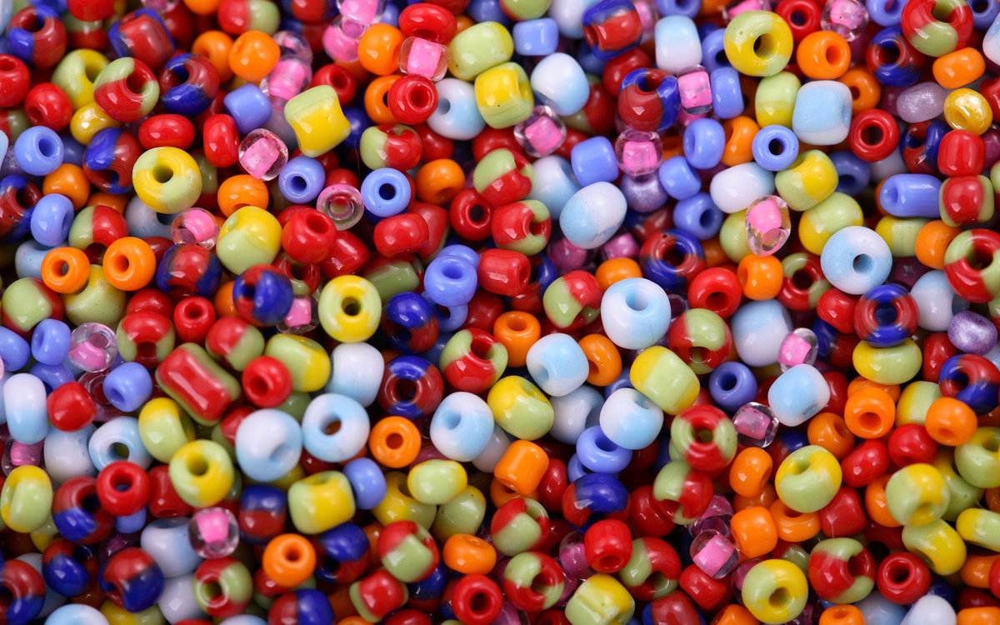
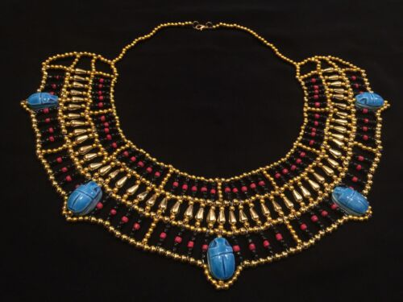
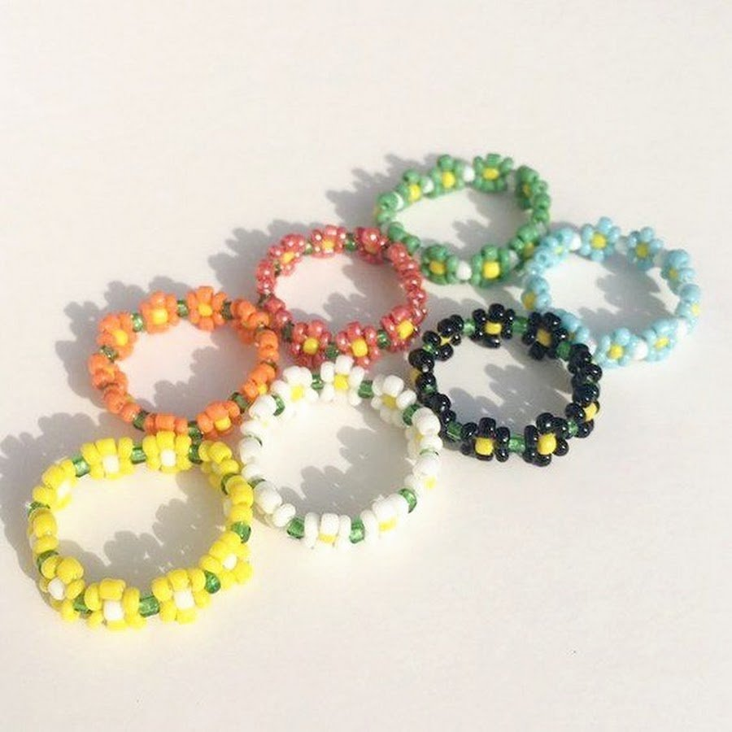

Современный бисер – это мелкие стеклянные бусины, размером до нескольких миллиметров имеющие сквозное отверстие для продевания нити, а микробисер – это стеклянные бусинки (мелкий шарик) без отверстия. Слово «бисер» произошло от арабского «бусер» или «бусра». Так в древнем Египте называли бусинки из матового стекла с отверстиями.
Впервые бисер появился в Египте, его археологи обнаружили при раскопках Фив. Их находки датируются примерно 4000 (четырехтысячным) годом до н.э. Найденные первые стеклянные бусины можно увидеть в Египетском зале Эрмитажа (в Санкт-Петербурге). Они совсем не такие, какими мы знаем бусинки бисера сегодня, намного крупнее (до 4 см) и вид бисеринок по форме похожи на капли. Изготовление бисера неразрывно связано с производством стекла, которое зародилось примерно в шестом тысячелетии до н.э. на территории современных Сирии, Ливана, Турции и Египта. Позже стеклоделие получило широкое распространение в Европе (в том числе и в России). В средние века центром изготовления стекла и бисера наряду с мусульманскими странами и Римом стала Венеция. Верховная власть запретила венецианским ремесленникам разглашать технологию его производства под страхом смертной казни. Одновременно стеклоделам были предоставлены особые привилегии — их дочери могли выходить замуж за представителей высшей знати. Здесь стеклоделие успешно развивалось, изобретались всё новые методы ручного производства стекла. Именно в Венеции к 1475 г. изобрели способ изготовления всемирно известного бисера из полых, а затем – цельных, разноцветных стеклянных трубочек с последующим их разрезанием на мелкие (бисерные) бусинки.
Колечки из бисера — это красивые и нежные украшения, которые плетутся из мелких бисерных бусин. Они создаются в разных стилях и цветах, что позволяет подобрать украшение под любой наряд. Красивые кольца из японского или чешского бисера могут быть простыми и элегантными, или же более сложными и креативными. Они также используются в качестве подарка для подруг, мам, сестер.
